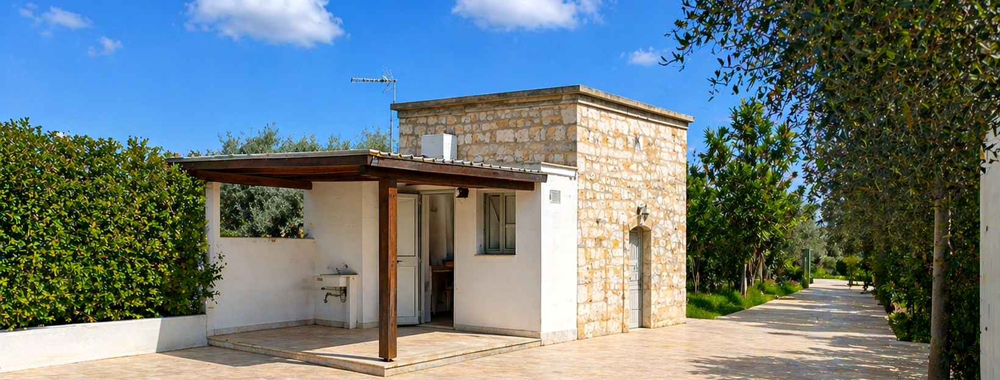
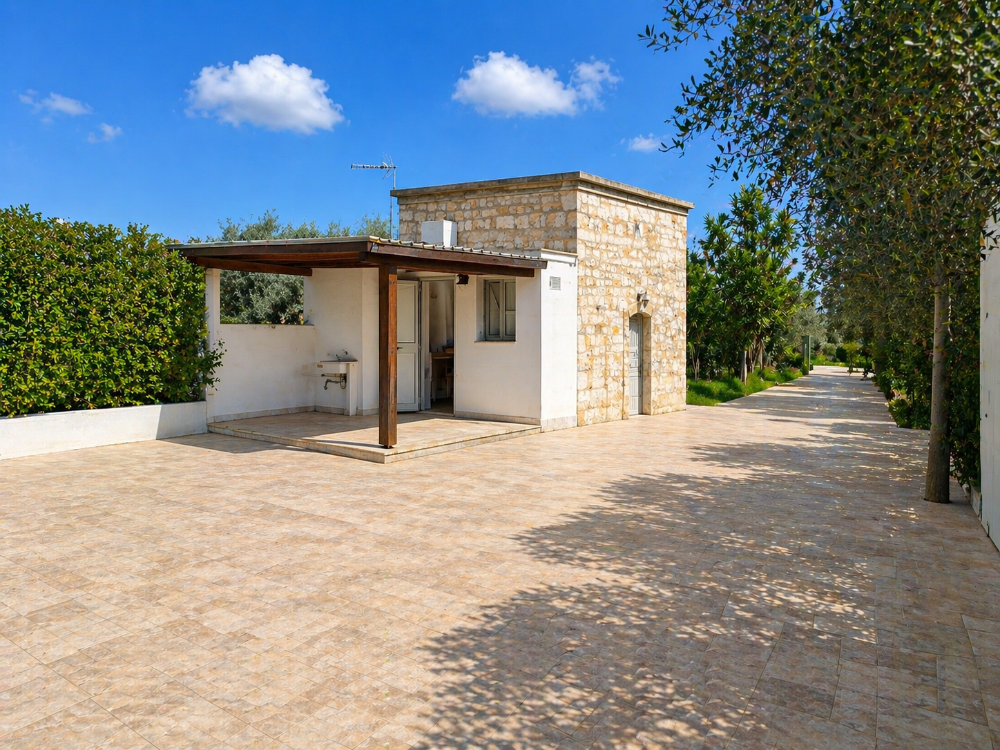
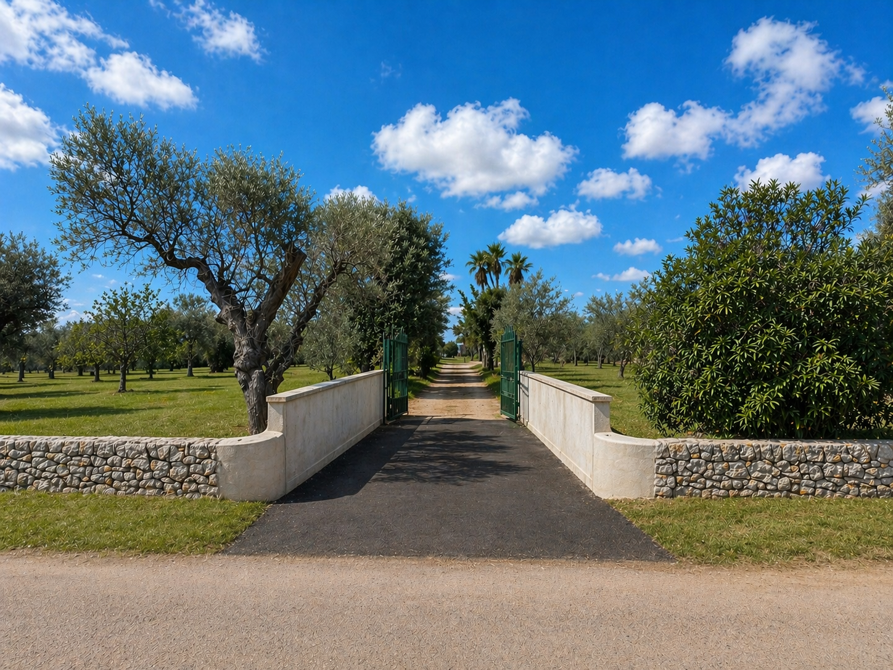
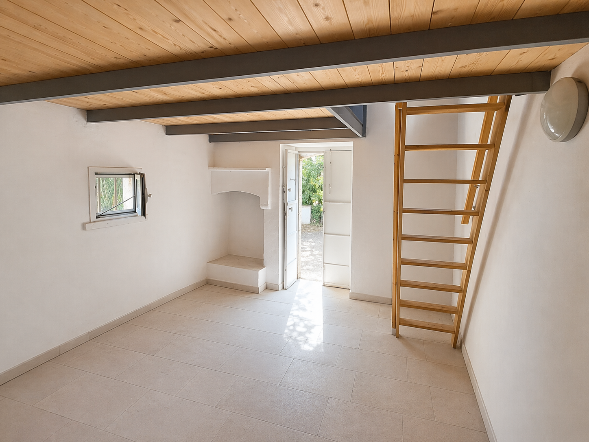
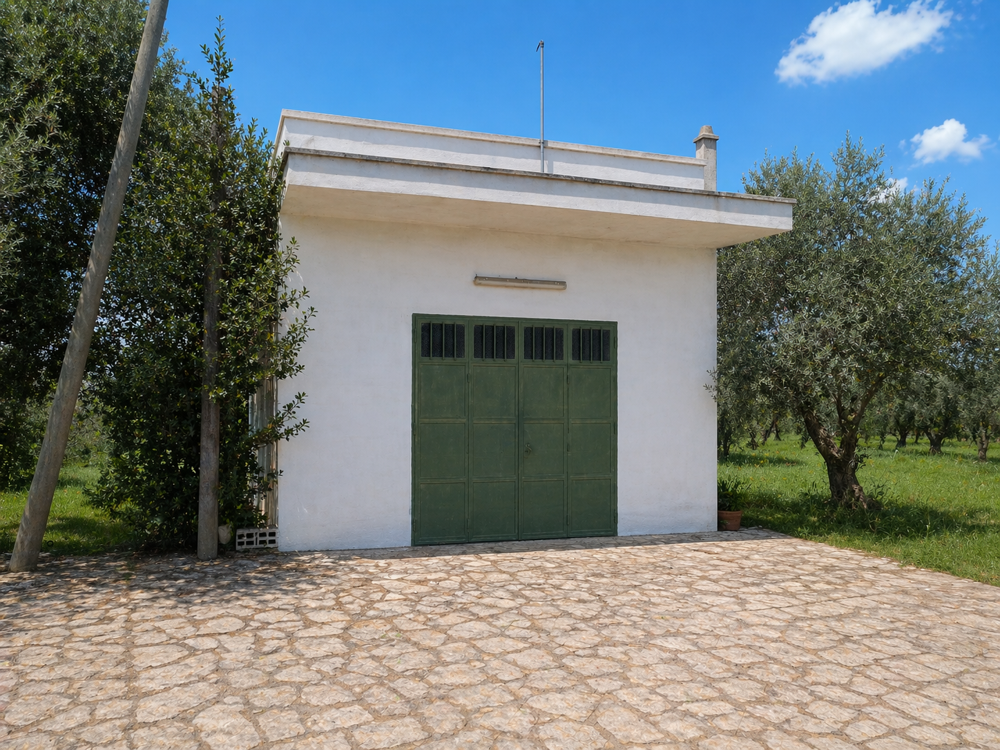
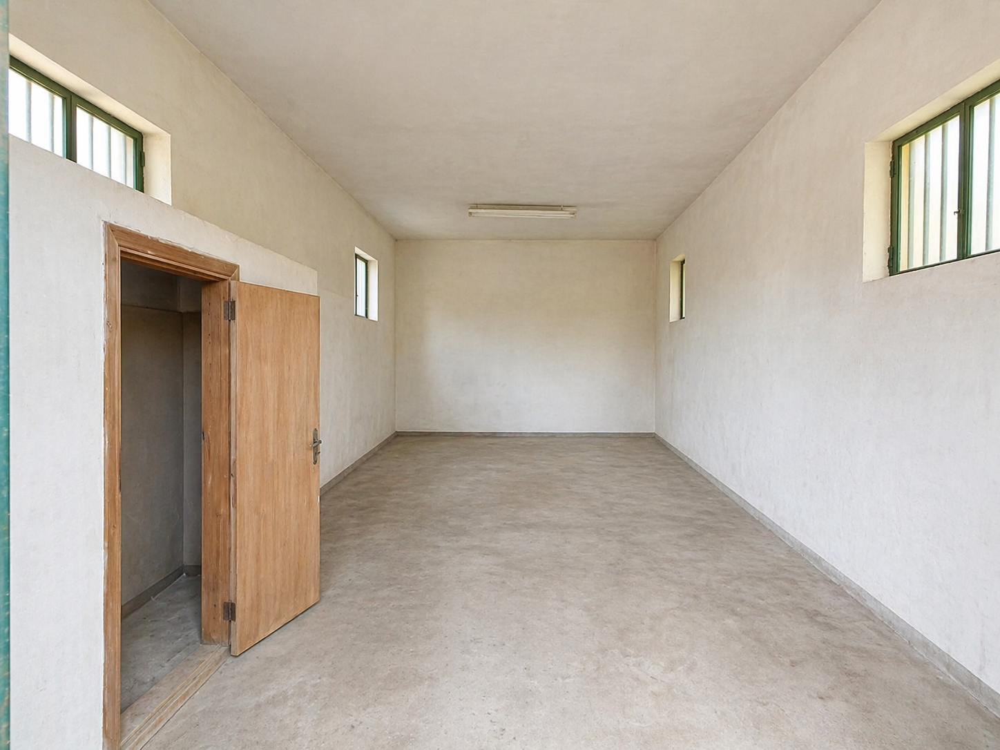
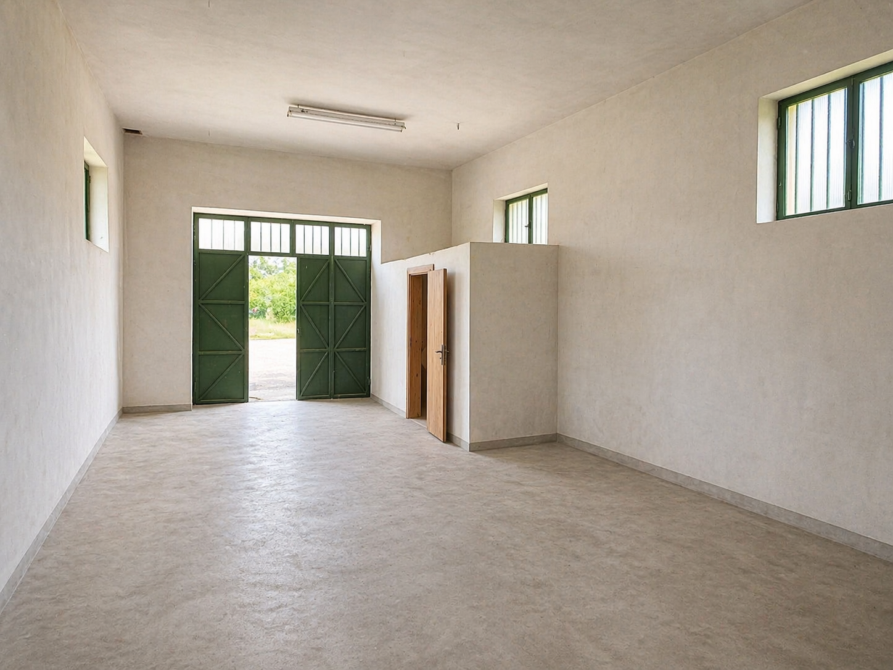
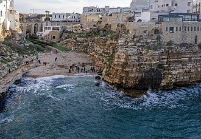
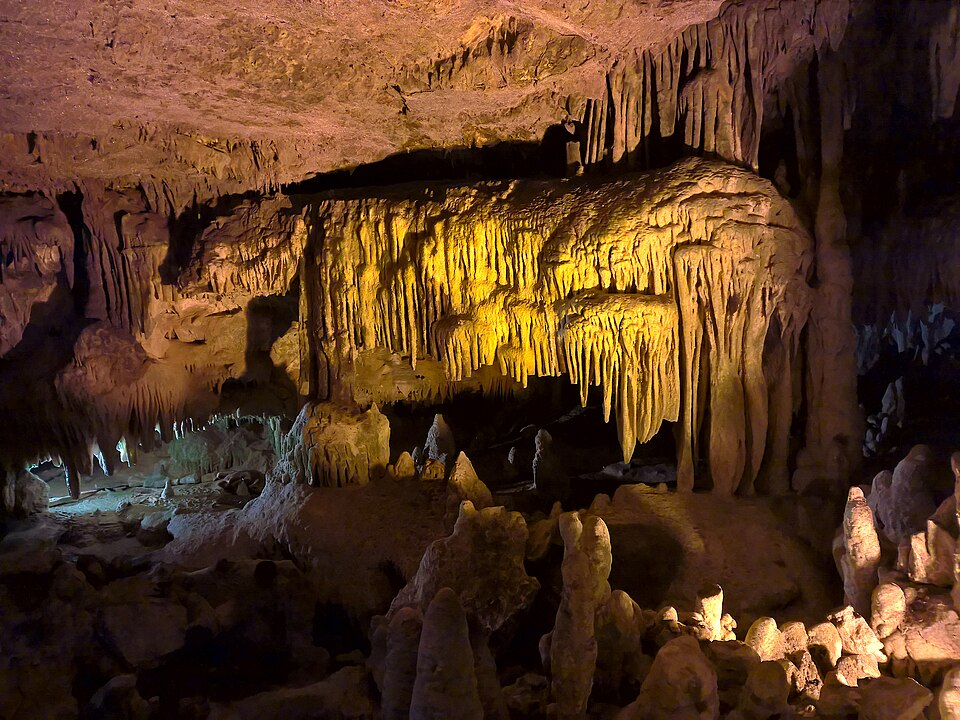
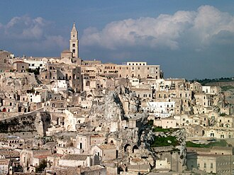

Guardare il fondo
Il torrino e spesso un punto alto o riconoscibile: aiuta a orientarsi nel terreno, controllare accessi e distinguere la proprieta nel paesaggio.

Contrada Castiglione, Conversano
Un percorso breve per guardare la posizione, leggere gli spazi attraverso le foto e capire il contesto storico dei torrini agricoli della Puglia.
Foto commentate
Le immagini di Castiglione presenti in questa sezione sono state ritoccate ed elaborate con strumenti di intelligenza artificiale a scopo illustrativo. Non sostituiscono sopralluogo, rilievi tecnici o documentazione ufficiale.

Ritocco AI
Ritocco AI
Ritocco AI
Ritocco AI
Ritocco AI
Ritocco AIStoria
I torrini rurali pugliesi nascono dentro un paesaggio agricolo fatto di pietra, ulivi, masserie, cisterne e piccoli fabbricati di servizio. Non sono solo costruzioni isolate: raccontano il modo in cui il territorio veniva abitato, controllato e coltivato.
Il torrino e spesso un punto alto o riconoscibile: aiuta a orientarsi nel terreno, controllare accessi e distinguere la proprieta nel paesaggio.
Accanto al torrino compaiono depositi, rimesse, piccoli ambienti e spazi ombreggiati. Sono strutture nate per accompagnare il lavoro nei campi.
La pietra calcarea, i muri a secco e le murature compatte legano questi edifici alla tradizione costruttiva pugliese e alla manutenzione del suolo agricolo.
Quando un fabbricato rurale compare negli atti storici, diventa una traccia concreta: aiuta a ricostruire continuita, trasformazioni e valore documentale del luogo.
Per Castiglione il fascicolo disponibile raccoglie atti storici, riferimenti catastali, planimetrie e materiale fotografico. Tra i documenti e indicato anche un atto notarile del 23 aprile 1951 che richiama un fabbricato rurale esistente.
Video
Dintorni
Castiglione ha il vantaggio di stare in campagna senza essere isolata: dal torrino si raggiungono facilmente il mare, i borghi storici, le grotte e alcune delle mete piu forti del turismo pugliese e lucano.

La costa adriatica e vicina: scogliere, calette, centri storici sul mare, ristoranti e passeggiate serali diventano una naturale estensione del soggiorno.
Il paesaggio dei trulli, delle strade bianche e dei borghi interni e facilmente raggiungibile, con Alberobello come riferimento piu noto.

Le grotte di Castellana aggiungono una meta naturale importante, utile sia per chi visita la zona sia per chi cerca esperienze diverse dal solo mare.

Matera amplia il raggio del viaggio: i Sassi, la storia rupestre e il paesaggio murgiano rendono il torrino una possibile base per itinerari piu ampi.
Posizione
La proprieta si trova in Contrada Castiglione, in un contesto agricolo di ulivi e strade poderali. La mappa permette di leggere accessi, distanze e rapporto con Conversano prima del sopralluogo; il pulsante apre la posizione precisa.
Contatti
Per valutare il bene sono disponibili immagini ritoccate con AI, documenti raccolti e sopralluogo con persone concretamente interessate.